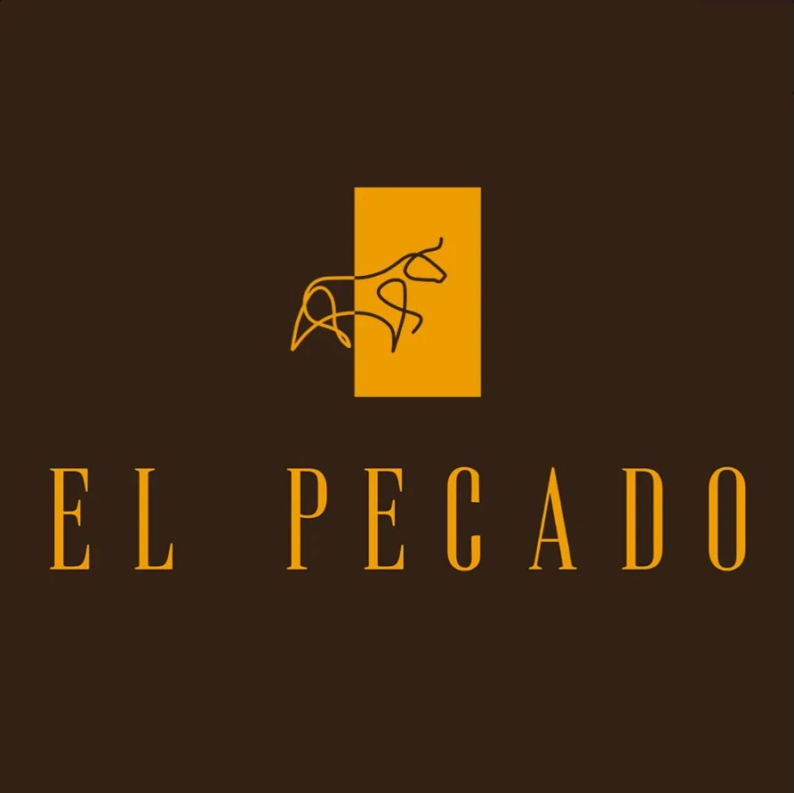
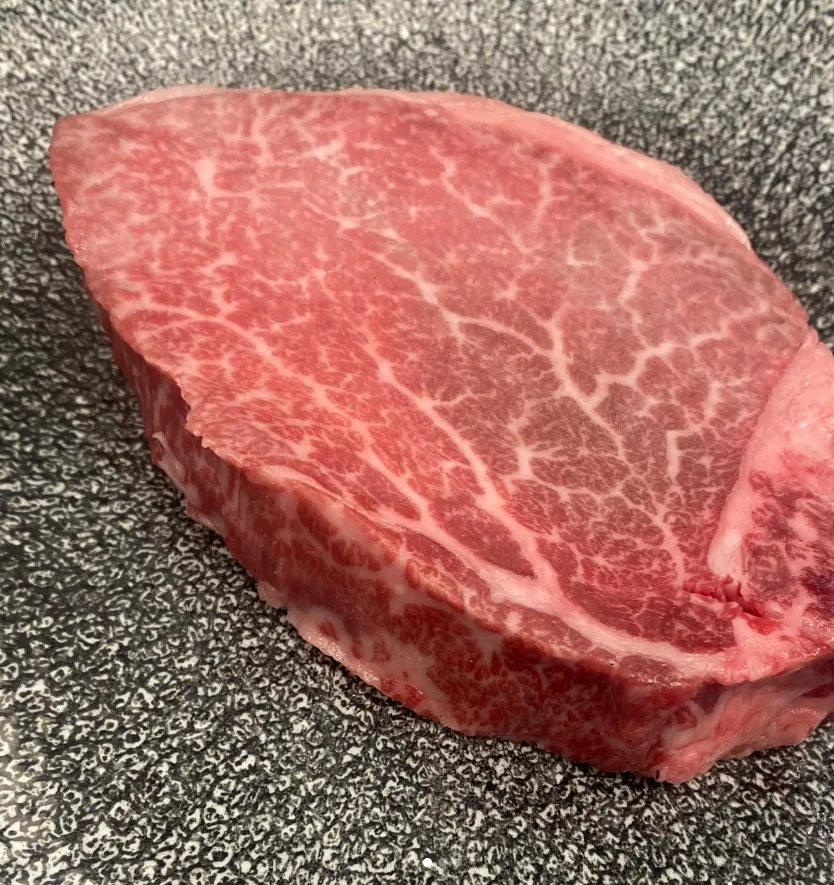
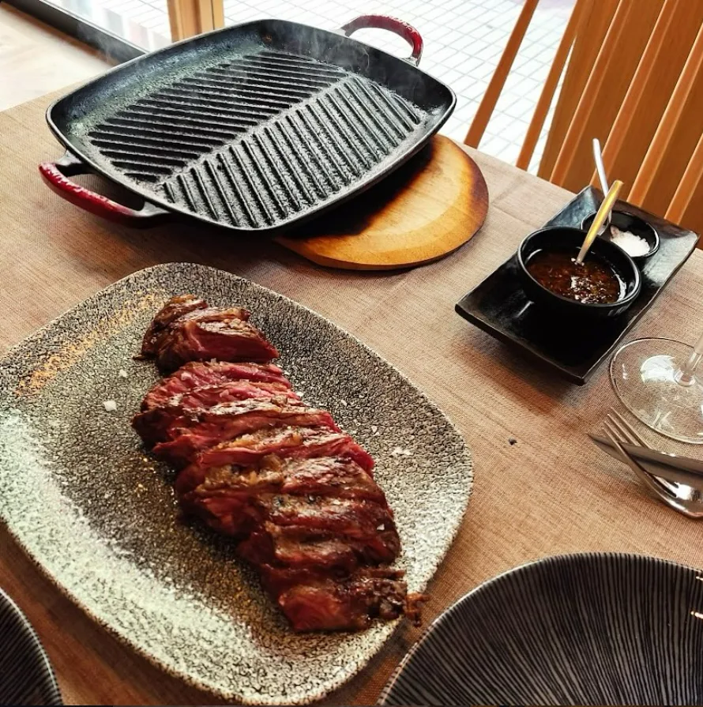
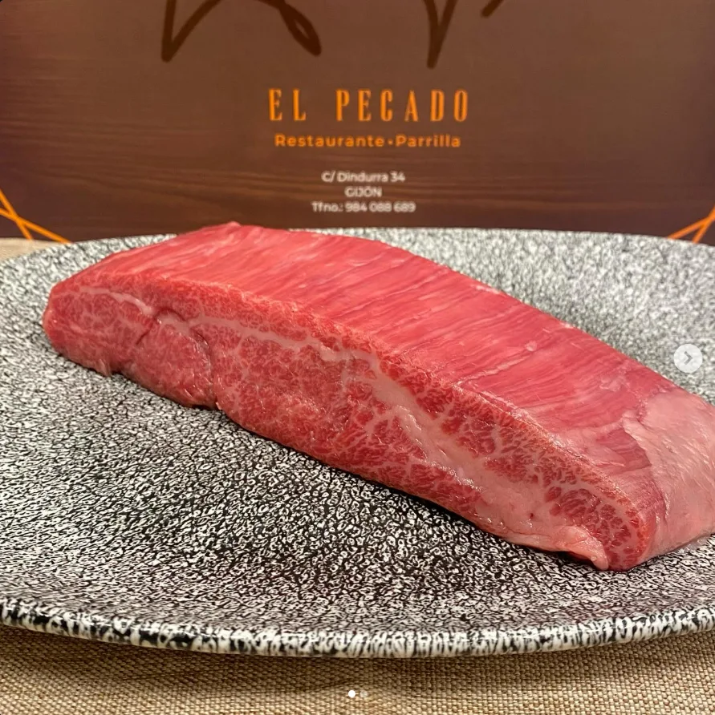
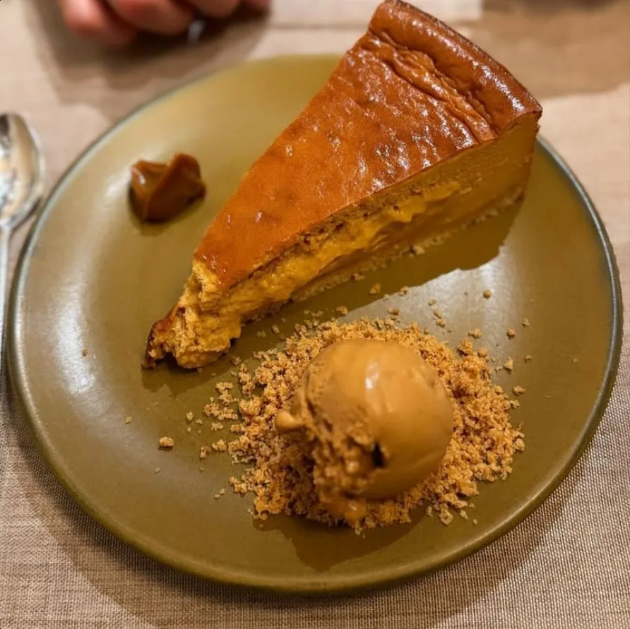

Solomillo Japonés Wagyu A5
Un corte excepcional por su terneza, jugosidad y sabor. Una de las propuestas más exclusivas de la casa.

En El Pecado cuidamos cada detalle para ofrecer una cocina centrada en carnes seleccionadas, sabores intensos y un ambiente cuidado y cercano. Si buscas un restaurante en el centro de Gijón para disfrutar de una comida especial, aquí tienes una propuesta clara y fácil de reservar.


Restaurante parrilla en Gijón pensado para quienes valoran el producto, el sabor y una experiencia bien atendida.
Nuestra cocina está orientada a carnes seleccionadas, especialidades con personalidad y una forma de trabajar basada en la calidad y el cuidado del detalle. Queremos que cada visita sea una buena experiencia, desde la reserva hasta el último plato.
Y aquí la carne la terminas tú: servimos cada corte a la mesa con su propia plancha caliente para que remates el punto exacto a tu gusto, bocado a bocado.
Reserva obligatoria. Atención directa por teléfono para garantizar una gestión rápida y cercana.
Tres platos que representan muy bien la propuesta y ayudan a convertir visitas en reservas.
Un corte excepcional por su terneza, jugosidad y sabor. Una de las propuestas más exclusivas de la casa.

Carne de altísima calidad con una textura y un sabor pensados para quienes disfrutan de una experiencia premium.

Un final dulce con carácter, ideal para cerrar la comida con un toque especial.
— Temporada —
Cocina honesta de producto. Consulta disponibilidad de algunas piezas al hacer tu reserva.
¿Ya tienes algo en mente?
Reserva tu mesa ahora y asegúrate de disfrutar de la mejor experiencia.
📞 Reservar — 984 088 689Una selección de nuestros platos para que veas la calidad del producto antes de reservar.
"La atención impecable, ambos camareros súper simpáticos y atentos. Las volandeiras, verdaderamente deliciosas, las mejores que he probado. Y un chuletón de vaca rubia gallega muy bueno de sabor. Excelente atención."
Comida 5 · Servicio 5 · Ambiente 5 · 90–100 € por persona"Un restaurante excelente. Las zamburiñas con mayonesa de wasabi, nunca había visto esta mezcla, un total 10. Los camareros son muy profesionales. Salimos muy contentos con la comida y el trato del personal."
Comida 5 · Servicio 5 · Ambiente 5 · 30–40 € por persona"Buena materia prima y un servicio fantástico. Son rápidos y eficientes en todo momento."
Comida 5 · Servicio 5 · Ambiente 5"La comida muy rica, el servicio excelente. Precio más elevado que muchos restaurantes de Gijón, pero la calidad y el servicio lo justifican."
Comida 5 · Servicio 5 · Ambiente 5Llámanos directamente al 984 088 689. La reserva es obligatoria para organizar mejor el servicio.
Jueves a lunes, con servicio de comidas y cenas. Martes y miércoles el restaurante permanece cerrado por descanso.
Parrilla y carnes premium, con especial foco en Wagyu japonés, cortes seleccionados y cocina de producto.
Estamos en Calle Dindurra, 34, en el centro de Gijón, Asturias.
Sí. Conforme al Reglamento UE 1169/2011, proporcionamos información completa sobre alérgenos. Consúltanos al hacer tu reserva o cuando llegues al restaurante y te informamos con detalle sobre cada plato.